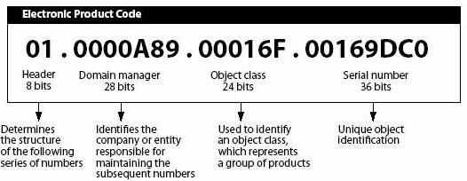
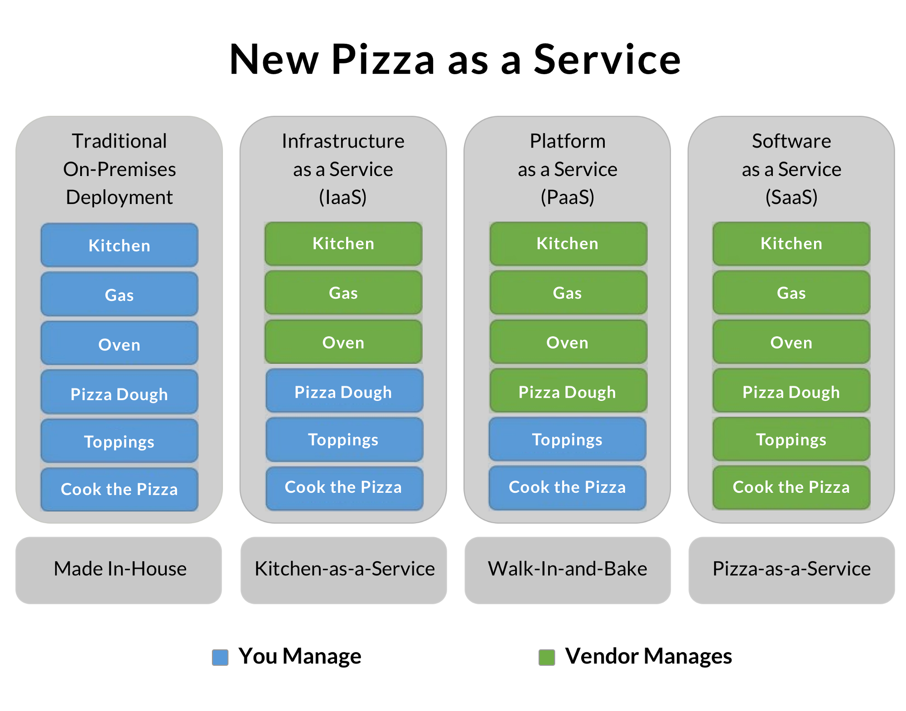

Fundamenten van Netwerken
Internet of Things 2026-27
Netwerken
Computernetwerk
- Bestaat uit
- Knooppunten - apparaten met een netwerkfunctie
- Verbindingen
- combinatie van computersystemen, besturingssystemen, bekabelingen en satellietverbindingen
Skribbl.io
Netwerk Topologie
- Manier waarop de knooppunten en verbindingen zijn georganiseerd
- Topologieën
- Point-to-point
- Bus
- Ring / Dual Ring
- Star
- Tree
- Mesh
- Hybrid
Gebruik
- Client / Server
- Peer-to-peer
RFID
- Radio-Frequency Identification
- Data wordt opgeslagen op een sticker (transponder)
- Elektromagnetische lezer leest de gegevens m.b.v. radiogolven
- Makkelijk te verwerken
- Unieke code: Electronic Product Code (EPC)
- Werking via inductie (elektromagnetisch veld)
Electronic Product Code
96-bit datastring

Soorten RFID
- Passief
- Geen batterij, door inductie
- Leesafstand: enkele cm (HF/NFC) tot ~10 m (UHF)
- Semi-actief
- Enkel zenden op antwoord van ontvangen signaal
- Actief
- Batterij: interval voor uitzenden
- Leesafstand: 10-100 m
- Chiploze tags
- Geen ID
| + | - |
| Meer info | Uitleesafstand |
| Detecteerbaar zonder zichtbaar te zijn | Metalen omgevingen |
| Gepaste plaatsing in pakket | Fraudegevoelig |
| Herprogrammeerbaar | Gebrek standaardisatie |
NFC
- Near Field Communication
- Enkele cm (max. ~4 cm)
- 1997: Eerste toepassing in Star Wars speelgoed
- 2011: Google Wallet, eerste NFC-betalingen met een smartphone
- Google Pay / Apple Pay / Payconiq, badges, digitale sleutels
- Actieve lezer en passieve NFC-tag
BAN
- Enkele meters
- In of rond menselijk lichaam
- Ster (met hub) of multihop
- Nieuwe generatie Wireless Sensor Network (WSN)
PAN
- Personal Area Network
- WPAN
- 0 tot 10m
Bluetooth
- Implementatie van WPAN
- Ericsson in 1994
- Klassiek: 1 central en max. 7 actieve peripherals
- 2.4 GHz
- Meestal tot 10 m, klasse 1 tot 100 m
- 2024: Bluetooth 6.0 met Channel Sounding (nauwkeurige afstandsmeting)
BLE
- Bluetooth Low Energy, sinds Bluetooth 4.0 (2010)
- Zeer laag verbruik: jaren op een knoopcel
- Advertising: data uitzenden zonder verbinding (beacons)
- Wearables, sensoren, trackers (AirTag, Tile)
- LE Audio & Auracast: audio delen met meerdere oortjes
LAN
- Local Area Network
- Ethernet: 1973, Xerox PARC
- Bekabeld (Ethernet) of draadloos (wifi)
IP
- Internet Protocol
- IPv4: 32 bits (ca. 4,3 miljard adressen, op)
- IPv6: 128 bits (praktisch onbeperkt), groeiend gebruik
- Private adressen in een LAN:
- 10.0.0.0 – 10.255.255.255
- 172.16.0.0 – 172.31.255.255
- 192.168.0.0 – 192.168.255.255
WAN
- Wide Area Network
- Verschillende LANs
- Gehuurde datacommunicatielijnen
- Complexe structuur
LPWAN
- Low Power Wide Area Network
- Radio-uitgeruste apparaten over lange afstanden laten communiceren
- Kleine hoeveelheden data, batterijduur van jaren
- Smart cities, landbouw, meters uitlezen
- Voorbeelden: LoRaWAN, Sigfox, NB-IoT, LTE-M
Wifi
- "Wireless Fidelity" (marketingnaam)
- IEEE 802.11-standaard
- 2.4 GHz, 5 GHz en 6 GHz
- Access points
- Wi-Fi 4 (n), 5 (ac), 6/6E (ax), 7 (be, 2024)
- Wi-Fi HaLow (802.11ah): lange afstand, laag verbruik voor IoT
Cellular
- Verbinding telefoon <> zendmast
- Ook Tablets, Smartwatches, IoT, Laptops
- Zendmasten
1G
- 1979: Japan
- 1981: Scandinavische landen
- 1983: VS
- Analoog
- 2.4 kbits/s
2G
- 1991: Eerste experimenten
- 10km bereikbaar
- GSM-standaard
- Telefoneren, SMS, MMS
- Digitaal geëncrypteerde verbinding
- 2.5G GPRS (General Packet Radio Service) met een maximum snelheid van 48 kbits/s
- 2.75G EDGE (Enhanced Data rates for GSM Evolution) met een maximum snelheid van 300 kbits/s
3G
- 3 km (hogere frequentie)
- Meer zendmasten
- 2 Mbit/s
- In België uitgeschakeld, 2G volgt
4G
- Tot 35 km bereik, meestal enkele km
- LTE: theoretisch 100 Mbit/s
- LTE-Advanced: tot 1 Gbit/s
- In de praktijk: tientallen Mbit/s
5G
- LF (< 1 GHz) 100Mb/s
- MF (< 6 GHz) 1Gb/s
- HF (> 6 GHz) 10Gb/s
- Zeer lage vertraging (latency), veel toestellen per km²
Cellular IoT
- NB-IoT: kleine berichten, diep binnenshuis, jaren op batterij
- LTE-M: meer data, ook voor bewegende toestellen (trackers)
- 5G RedCap: "lichte" 5G voor wearables en camera's
- eSIM / iSIM: simkaart ingebouwd in de chip
Zigbee
- Open standaard draadloze communicatie
- Mesh-netwerk op 2.4 GHz
- Lage kost en verbruik
- Bv. Philips Hue, IKEA, sensoren
- Coordinator, Router en End Device
- Beacon / Non-beacon
- IEEE 802.15.4
Z-wave
- Domotica
- Mesh
- Toestellen van verschillende fabrikanten
- 868 MHz (EU)
- Max. 30 m per hop
- 100 kbit/s
- Z-Wave Long Range: enkele km (sinds 2020)
Thread
- Mesh-netwerk op basis van IEEE 802.15.4 (zoals Zigbee)
- Maar: IPv6, elk toestel heeft een eigen IP-adres
- Geen single point of failure
- Border router verbindt met wifi/internet (bv. smart speaker, Apple TV)
Matter
- Gemeenschappelijke smart home-standaard (2022)
- Apple, Google, Amazon, Samsung, ... samen in de Connectivity Standards Alliance
- Werkt over wifi, Thread en Ethernet
- Lokaal: werkt ook zonder cloud
- Eén toestel, alle ecosystemen (Home, Google Home, Alexa, Home Assistant)
LoRa
- Long Range
- Radiotechniek (fysieke laag)
- Tot ~15 km op het platteland, enkele km in de stad
- Beperkt energieverbruik
- 0,3 tot 27 kbit/s
- Propriëtaire modulatie van Semtech
LoRaWAN
- Netwerkprotocol bovenop LoRa, een vorm van LPWAN
- Open specificatie van de LoRa Alliance
- Gateways sturen data door naar een netwerkserver (bv. The Things Network)
- LoRaWAN-gateway: niet zenden én ontvangen tegelijk
Protocollen
Indeling
- Applicatielaag
- DNS, FTP, HTTP, HTTPS, SMTP, POP, IMAP
- Transportlaag
- TCP, UDP (poorten), QUIC
- Netwerklaag
- IP / IPv4, IPv6
- Datalinklaag
- Ethernet, wifi, Bluetooth
UDP
- User Datagram Protocol
- Connectieloos protocol
- Geen ontvangstbewijs
- Geen controle op fouten
- DNS-requests & streaming audio en video
TCP
- Transmission Control Protocol
- Connectiegestuurd protocol
- Verbinding wordt opgebouwd en afgesloten
- Verzonden data wordt bevestigd
- Verzonden data wordt in de juiste volgorde ontvangen
- Trager dan UDP
- Zoals een telefoongesprek
| TCP | UDP |
| Verbinding-georiënteerd protocol | Bericht-georiënteerd protocol |
| Tweezijdige controle | Eenzijdige controle |
| Betrouwbaar | Snel |
| Herschikking pakketten | Geen herschikking |
| Header: 20 bytes | Header: 8 bytes |
| Foutherstel | Geen foutherstel, foutieve pakketten worden verwijderd |
HTTP
- Hypertext Transfer Protocol
- Gebruikt voor communicatie tussen webserver en browser
- Request / Response
- Request-type, URI, headers en eventuele inhoud
- Response-code, headers en eventuele inhoud
- GET, POST, PUT, PATCH, DELETE
- HTTPS = HTTP + TLS (vroeger SSL)
- HTTP/2 en HTTP/3 (over QUIC/UDP): sneller
HTTP-responsecodes
- 200 OK
- 404 not found
- 403 forbidden
- 500 internal server error
- 503 service unavailable
- 504 gateway timeout
MQTT
- Message Queuing Telemetry Transport
- Lightweight messaging protocol
- M2M connection-oriented protocol
- Verbinding blijft open tijdens gegevensoverdracht
- Gebaseerd op TCP, huidige versie: MQTT 5
- Broker verdeelt de berichten
- Publish / subscribe op topics
- Bericht: topic en inhoud (payload)
MQTT-topics
- Hiërarchie met slashes:
huis/woonkamer/temperatuur += één niveau:huis/+/temperatuur#= alle onderliggende niveaus:huis/#
MQTT: Quality of Service
- 0: At most once - fire and forget
- 1: At least once - acknowledged delivery
- 2: Exactly once - assured delivery
CoAP
- Constrained Application Protocol
- Lightweight protocol for machine-to-machine communication
- Ontworpen voor kleine apparaten
- Zoals HTTP, maar over UDP
- Beveiliging via DTLS
- Client / Server
- Gebaseerd op REST
- Eenvoudig te vertalen naar HTTP
AMQP
- Advanced Message Queuing Protocol
- Applicatielaag
- Message Oriented Middleware (MOM)
- Garanties voor berichtbezorging
- SASL of TLS
Andere
- DDS
- WebSockets
- WebRTC
- XMPP
- LwM2M
- Matter
Cloud Systems
AaS: as a service


IaaS
- Infrastructure as a Service
- Virtualisatie
- Storage
- Networking
- Compute
PaaS
- Platform as a Service
- Runtime
- Middleware
- Tools
- Services
SaaS
- Software as a Service
- Webapplicaties
- Webbased tools
- Webbased services
BaaS
- Backend as a Service
- Database
- Authenticatie
- Storage
- Analytics
Andere
- Function as a Service
- Mobile Backend as a Service
- Internet of Things as a Service
- Analytics as a Service
- Security as a Service
- Identity as a Service
- Monitoring as a Service
- Testing as a Service
- Content as a Service
IoT Platformen
- Device platform
- sensoren, actuatoren, gateways en andere apparaten
-
Connectivity Platform
- connectiviteit tussen devices en cloud
-
IoT platform
- Apparaatbeheer
- Dataprocessing
- Analytics
- Applicaties
IoT platformen
- AWS IoT Core
- Microsoft Azure IoT Hub
- ThingWorx
- ThingSpeak
- ThingsBoard (open source)
- Home Assistant & Node-RED (lokaal, open source)
- The Things Network (LoRaWAN)